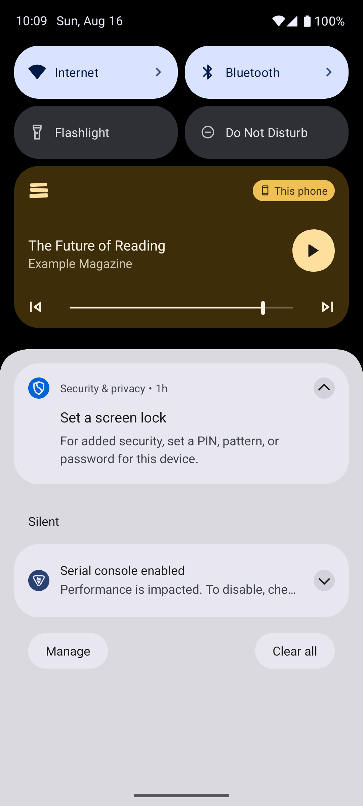
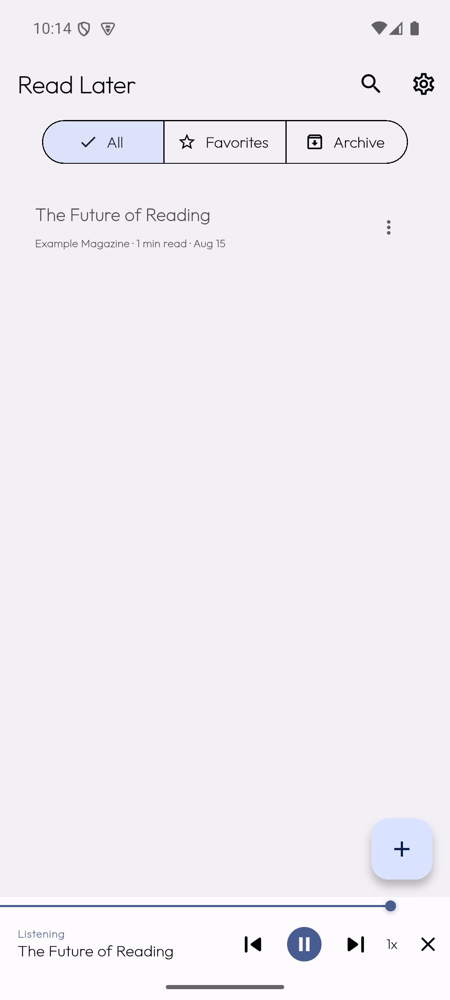
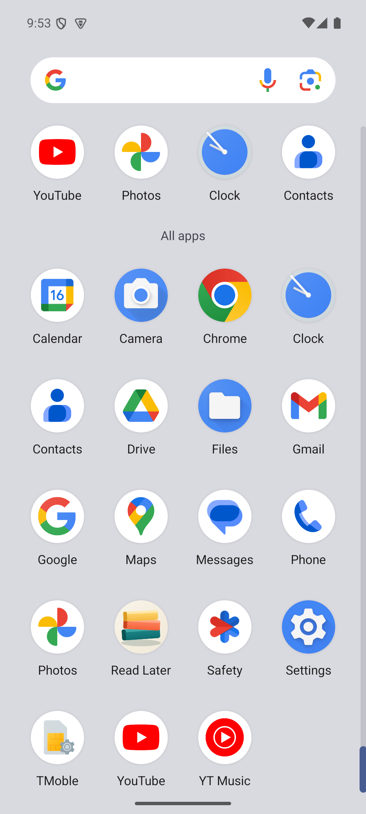
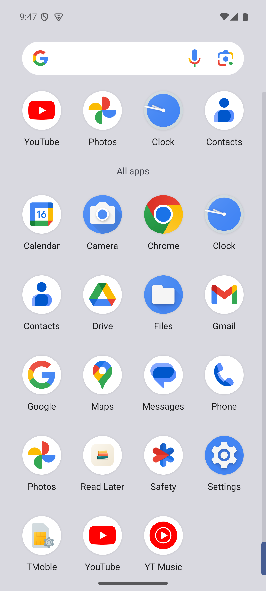
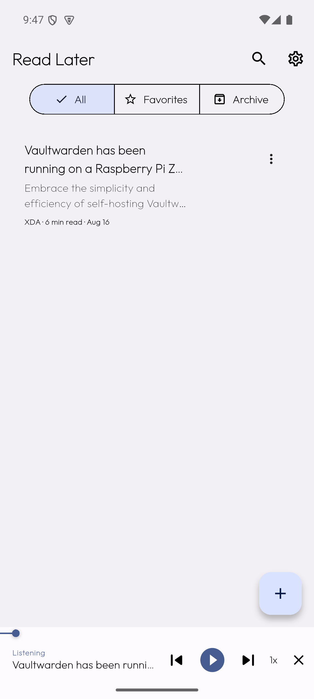

Read Later — launcher icons + media notification icon
Media notification (the fix)

Notification shade with the media player card — "The Future of Reading … playing from Read Later", 3 controls, red accent (Android 15)

Status bar with playback active
ic_stat_listening.png — the new monochrome small icon used by the media notification (silhouette of the themed icon)
Verified via dumpsys notification → small icon = 0x7f0d0005 = mipmap/ic_stat_listening (was mipmap/ic_launcher before the fix).
Source launcher icon assets (xxxhdpi)
ic_launcher.png — legacy icon
ic_launcher_background.png — adaptive background
ic_launcher_foreground.png — adaptive foreground
ic_launcher_monochrome.png — themed icon
Launcher rendering

App drawer — adaptive icon after wiring (cream squircle/circle + ribbon glyph)

App drawer — before wiring: icon stuck in a white circle

App running